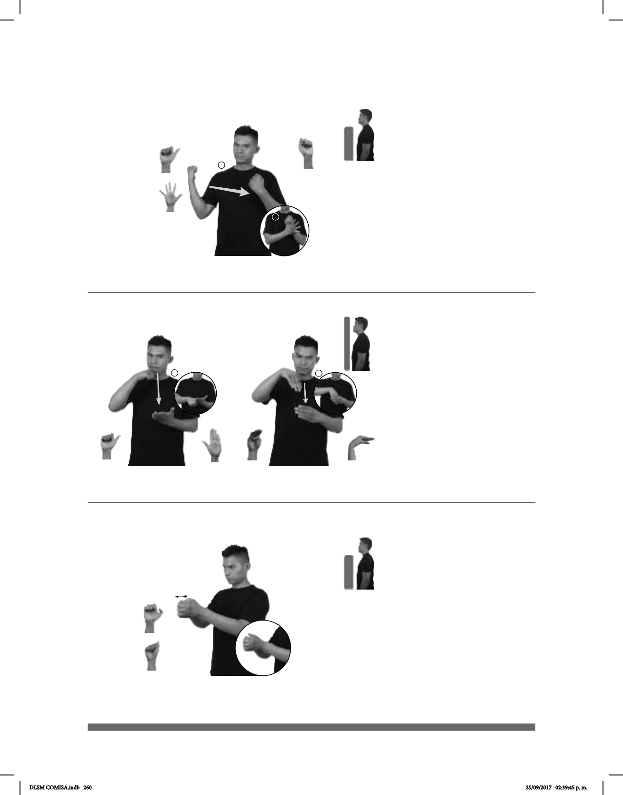

260
1
2
(A-82)
__muy
ESE ANILLO TENER BRILLANTE CARO
Ese anillo tiene un brillante muy caro.
1
2
(A-83)
CARTA DENTRO BUZÓN pro-YO YA ENCONTRAR
Encontré una carta en el buzón.
(A-84)
CACAHUATES CON LIMÓN SAL pro-YO ENCANTA COMER
Me encanta comer cacahuates con limón y sal.
Seña: SB
MD seña que pasa de A.1 a
5.1, MB S.1.
MD y MB palmas hacia
dentro.
MD a la altura del hombro del
lado derecho al centro. MB a la altura del
pecho.
MD recto mientras los dedos
se extienden.
adj. m. Pieza preciosa
constituida por carbono cristalizado que se
utiliza en joyería por su brillo y transparen-
cia y en la industria por su elevada dureza.
Seña: SC: I. y II. SB
I. MD A.1, MB B-P.2; II.
MD B-P.4, MB P.4
I. MD palma hacia abajo.
MB palma hacia arriba; II. MD y MB
palmas hacia dentro.
I. MD inicia sobre la boca y
termina sobre MB. MB a la altura del
pecho; II. MD inicia a la altura del pecho
y termina dentro de MB. MB a la altura
del pecho.
I. El dedo pulgar de la MD
golpea a la MB en línea recta; II. MD
recto.
sust. m. Depósito en forma de
caja en el que se echan las cartas y la
correspondencia en general para ser
enviadas por correo o para que las recoja
el destinatario.
Seña: SB
MD A.7, MB A.5
Las palmas se
encuentran frente a frente.
A la altura del pecho.
MD curbiendo a MB.
El pulgar de MD se
desliza hacia afuera repetidamente.
sust. m. Planta
leguminosa con tallo rastrero,
fruto en vaina con dos o tres
semillas comestibles dentro.
DLSM COMISA.indb 260 25/09/2017 02:39:45 p. m.